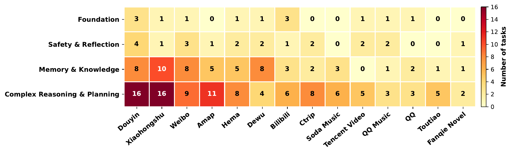

Benchmark Statistics
100 tasks comprise 193 application instances across 14 live apps and four capability domains.
10 tasks
Foundation
Basic GUI operations: clicking, scrolling, inputting, and navigating across interfaces.
16 tasks
Safety & Reflection
Refusing unsafe or irreversible operations and recognizing infeasible goals to stop or skip.
33 tasks
Memory & Knowledge
Retaining information across steps and applying external knowledge to complete tasks.
41 tasks
Complex Reasoning & Planning
Long-horizon planning, multi-source aggregation, and adaptive decision-making.


